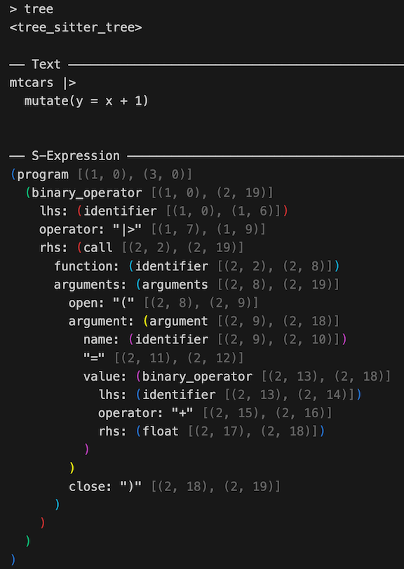

treesitter provides R bindings to tree-sitter, an incremental parsing system. It can build a concrete syntax tree for a source file and efficiently update the syntax tree as the source file is edited. tree-sitter is useful for a number of things, including syntax highlighting, go-to definition, code reshaping, and more.
Installation
Install treesitter from CRAN with:
install.packages("treesitter")This package does not provide bindings to a language specific tree-sitter grammar. To fully utilize the treesitter package, you will also need to install a grammar specific R package. Currently there is just one, for R:
install.packages("treesitter.r")You can install the development version of treesitter from GitHub with:
# install.packages("pak")
pak::pak("DavisVaughan/r-tree-sitter")Example
With treesitter, you can parse a string containing code for any language that you have a grammar for. Here’s an example with R code:
library(treesitter, warn.conflicts = FALSE)
# Language specific grammars come from extension packages
language <- treesitter.r::language()
parser <- parser(language)
# Imagine this is a source document
text <- "
1 + 2
"
# Parse the text and display the resulting syntax tree
parser_parse(parser, text)
#> <tree_sitter_tree>
#>
#> ── Text ────────────────────────────────────────────────────────────────────────
#> 1 + 2
#>
#>
#> ── S-Expression ────────────────────────────────────────────────────────────────
#> (program [(1, 0), (2, 0)]
#> (binary_operator [(1, 0), (1, 5)]
#> lhs: (float [(1, 0), (1, 1)])
#> operator: "+" [(1, 2), (1, 3)]
#> rhs: (float [(1, 4), (1, 5)])
#> )
#> )Syntax trees can get pretty complex, here’s a larger example:
text <- "
mtcars |>
mutate(y = x + 1)
"
tree <- parser_parse(parser, text)Trees and nodes have a pretty nice print method that colors matching parentheses and dims the locations. If you were to print out tree in your R console, here’s what you’d see:

treesitter has a number of tools for navigating around and walking the tree:
# The right hand side of the pipe
node <- tree |>
tree_root_node() |>
node_child(1) |>
node_child_by_field_name("rhs")
node_text(node)
#> [1] "mutate(y = x + 1)"By default, printing a node in the tree will show both the anonymous nodes and the named nodes. Anonymous nodes help you see the full “concrete” syntax tree that tree-sitter builds. If you want to see something more akin to an abstract syntax tree, you can use node_show_s_expression(), which has a number of options for customizing the tree view:
# Full detail
node_show_s_expression(node)
#> (call [(2, 2), (2, 19)]
#> function: (identifier [(2, 2), (2, 8)])
#> arguments: (arguments [(2, 8), (2, 19)]
#> open: "(" [(2, 8), (2, 9)]
#> argument: (argument [(2, 9), (2, 18)]
#> name: (identifier [(2, 9), (2, 10)])
#> "=" [(2, 11), (2, 12)]
#> value: (binary_operator [(2, 13), (2, 18)]
#> lhs: (identifier [(2, 13), (2, 14)])
#> operator: "+" [(2, 15), (2, 16)]
#> rhs: (float [(2, 17), (2, 18)])
#> )
#> )
#> close: ")" [(2, 18), (2, 19)]
#> )
#> )
# Compact view, more like an AST
node_show_s_expression(
node,
show_anonymous = FALSE,
show_locations = FALSE,
dangling_parenthesis = FALSE
)
#> (call
#> function: (identifier)
#> arguments: (arguments
#> argument: (argument
#> name: (identifier)
#> value: (binary_operator
#> lhs: (identifier)
#> rhs: (float)))))